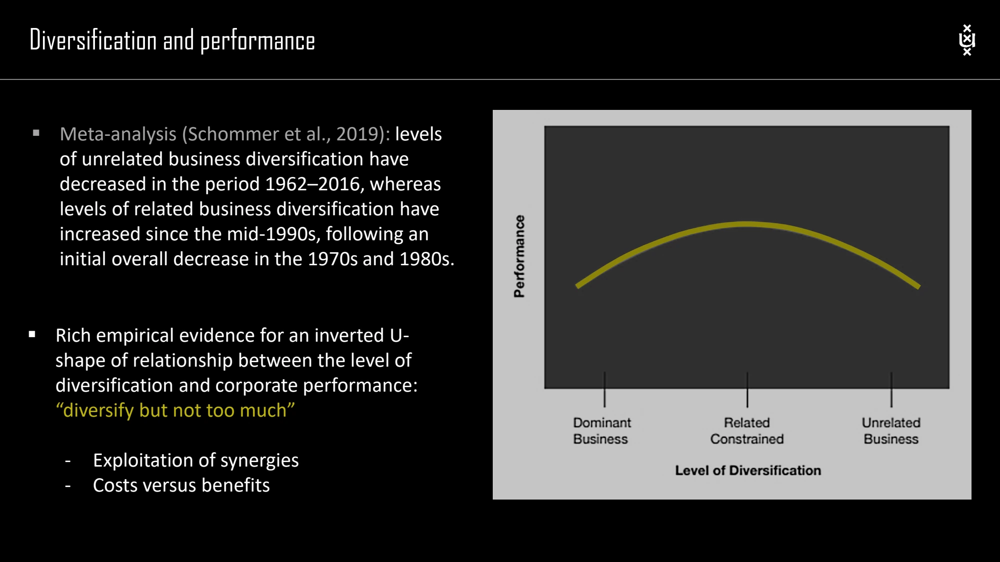

The framework
| Measure / category | Course definition or threshold | Interpretation |
|---|---|---|
| RS: specialization ratio | Revenue share attributable to the largest single business. | How dominant is the biggest business? |
| RR: related ratio | Revenue share from the largest group of somehow related businesses. | How much of the portfolio is linked? |
| RC: related-core ratio | Revenue share from the largest group sharing the same core skills, strengths or resources. | How extensive is the common core? |
| Single business | RS ≥ 95% | Almost all revenue comes from one business. |
| Dominant business | 70% ≤ RS < 95% | One business dominates, but other activities matter. |
| Related business | RS < 70% and RR ≥ 70% | A large related group extends beyond the largest unit. |
| Unrelated business | RS < 70% and RR < 70% | No sufficiently large related group meets the course threshold. |
| Related-constrained | Within related business: RC > (RS + RR) / 2 | A stronger shared core across the portfolio. |
| Related-linked | Within related business: RC < (RS + RR) / 2 | Links exist, but are less concentrated around one common core. |
Key distinctions
Classification requires judgment before arithmetic
The ratios depend on how businesses are defined and which relationships count. Establish the units and describe their resource, activity or capability links before applying thresholds. Otherwise precise percentages can conceal arbitrary classifications.
What the measure does not say
The classification describes the portfolio; it does not establish that a higher or lower diversification level is optimal. Performance also depends on the benefits of relatedness, costs of coordination and the parent's ability to manage the portfolio.
How to use it
- Define business units consistently and collect their revenue shares.
- Identify the largest unit, related group and common-core group.
- Calculate RS, RR and RC, then apply the course thresholds.
- Explain the substantive links behind the classification.
Keep in mind
The source slide uses strict inequalities for the two RC subcategories and does not specify the equality case. Do not silently invent a rule for that boundary.
Can a portfolio be related but only weakly common-core?
Reveal the explanation
Yes. Related-linked businesses can share selected links without all drawing on one common core.
Read the classroom original
Complete pages from the supplied lecture slides. Select a page to read, enlarge or browse its extracted text. Page numbers refer to the PDF’s physical page order.
